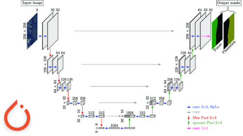

Drone Footage Segmentation
Sudhanv Apte
Objective
- Drone Landing needs the area to be clear
- Detecting obstacles near the landing zone is important
- Segmentation is used to get pixel level detection
Architecture

UNet
MobileNetv2
Data
- Dataset sourced from kaggle
- Dataset contains 400 images and mask pairs
- Preprocessing techniques like horizontal and vertical flip, random brightness, gaussian noise
- Divided into 306 train, 54 val and 40 test images.
Training
- Training for 14 epochs
- Validation after each training epoch
- Cross Entropy Loss
- AdamW Optimiser
Evaluation
- Pixel accuracy: 80%
- MIoU around 0.35 - 0.45
- MIoU because pixel accuracy can be decieving.